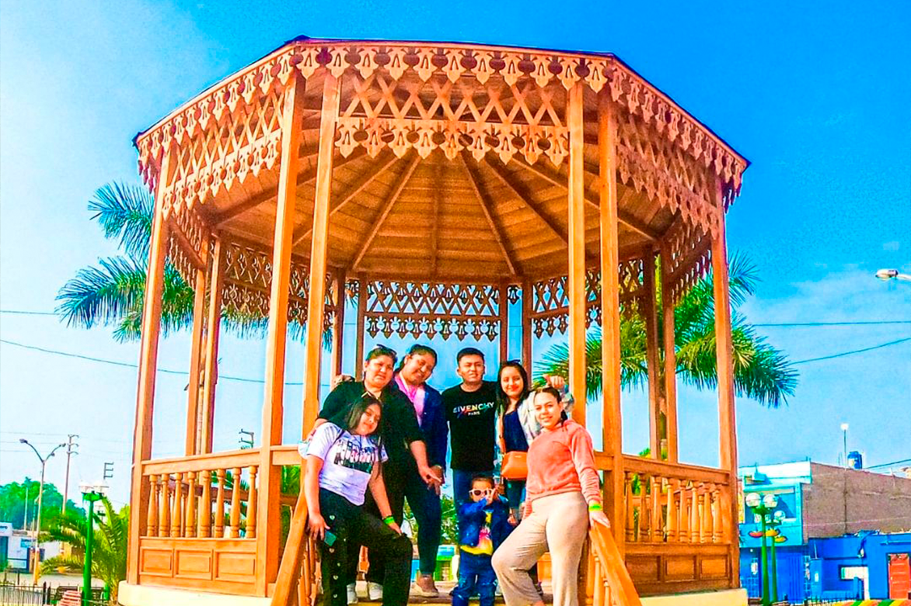

- ✅Tour Básico : S/ 89
- ✅Tour Reservado con 7 dias de anticipacion : S/ 79
ITINERARIO
PUNTOS DE EMBARQUES
- 6:40 AM C.C. Real Plaza de Pro, paradero tottus de Puente Piedra
- 6:20 AM C.Comercial Plaza Norte, altura de Av. Thomas Valle con Panamericana Norte, única puerta que da para la Av Panamericana norte.
- 5:20 AM Centro Comercial La Rambla San Borja (Calle Ucello 162 – costado de Ripley) 10 minutos tolerancia.
1ra Parada
Nuestra aventura comienza hacia el
norte de Lima. Iniciando nuestro
recorrido en el distrito de aucallama,
aqui visitaremos la plaza mayor de
este historico distrito de la provincia
de huaral, conoceremos la Glorieta y
Capilla del Pueblo.

2ra Parada
Nos dirigiremos a la Casa Hacienda
Huando y la Capilla Nuestra Señora
Inmaculada de la Concepcion,
patrtona de la ex Hacienda Huando,
aqui realizaremos un recorrido y
conoceremos la historia de este
famoso lugar.
3ra Parada
Luego visitaremos la vitivinicola La
Perla de Huaral donde realizaremos la
degustacion de vinos, piscos y
derivados de los mismos. Aqui
podremos realizar un recorrido entre
los cultivos de la zona, donde tambien
encontraremos un puente colgante y
un pequeño zoologico. Nos dirigiremos
hacia algun restaurante turistico
regional para el respectivo almuerzo.
4ra Parada
Visitaremos el famoso Castillo de
Chancay conociendo la historia de su
construcción al mando de Consuelo
Amat y Leon, bisnieta del virrey del
Peru Manuel Amat y Juniet, y haremos
un recorrido por sus instalaciones
visitando: el salon de los recuerdos,
sala de fotografía, sala museo castillo
de chancay, sala museo natural,
capilla y mirador.
5ra Parada
Finalmente visitaremos el Ecotruly
Park (no incluye ticket de ingreso)
comunidad que pertenece a los Hare
Khrishna, donde conoceremos la
cultura y vivencia de los residentes y
voluntarios que se encuentran aqui.
Conoceremos sus templos ,
biohuertos y naturaleza.
Finalizando tendremos un tiempo libre
para visitar la playa Chacra y Mar
para poder observar un hermoso
atardecer.
NUESTRO PROGRAMA INCLUYE:
- ✅Transporte turístico Lima - Huaral - Chancay - Lima
- ✅Desayuno empaquetado (Galleta + cereal + jugo)
- ✅Visita al distrito de Aucallama.
- ✅Visita a la plaza mayor de Aucallama.
- ✅Visita al fundo Maria Paz.
- ✅Visita a la Casa Hacienda Huando.
- ✅Visita al Castillo de Chancay.
- ✅Ticket de ingreso al Castillo de Chancay.
- ✅Visita al Ecotruly Park.
- ✅Degustación de vinos y piscos.
- ✅Participación en la producción y elaboración de vino. •Tirolesa (opcional)
- ✅Cosecha de mandarina
- ✅ naranja
- ✅ manzana o palta.
- ✅Visita a un restaurante campestre tradicional.
- ✅01 botella de vino al cumpleañero.
- ✅Gratis 1 vino a grupos de 5 personas.
- ✅Fotografías durante el recorrido.
- ✅Botiquín de primeros auxilios y anticovid: Alcohol en gel
- ✅ termómetro y oxímetro.
- ✅Seguro contra accidentes (SOAT)
- ✅Sorteos.
NO INCLUYE:
- Almuerzo / Ticket de ingreso Ecotrully S/. 10 / Opcional: Tirolesa S/. 15
/ Gastos personales.
RETORNO:
Estaremos en lima entre 7:30 pm aprox.
***Fin de nuestros servicios***
Las actividades pueden variar su orden
¿COMO RESERVAR?
- 1 Solicitar Cuentas Bancarias
- 2 Puedes reservar con el 50% y lo restante se paga al subir al bus el día del Tour.
- 3 Enviarnos el comprobante y confirmar sus reservas con Nombres, N° DNI, C.E y número telefónico .
- 4 Solicita tu boleto de abordo digital
Estamos registrados en Ministerio de Comercio y Turismo del Perú MINCETUR único requisito para agencias de viajes formales y BIOSEGURAS.
REVISA NUESTROS TERMINOS Y CONDICIONES ⬇
LINK: "https://bit.ly/36cYjLF "
 Hola, ¿en que podemos ayudarle?
Hola, ¿en que podemos ayudarle?